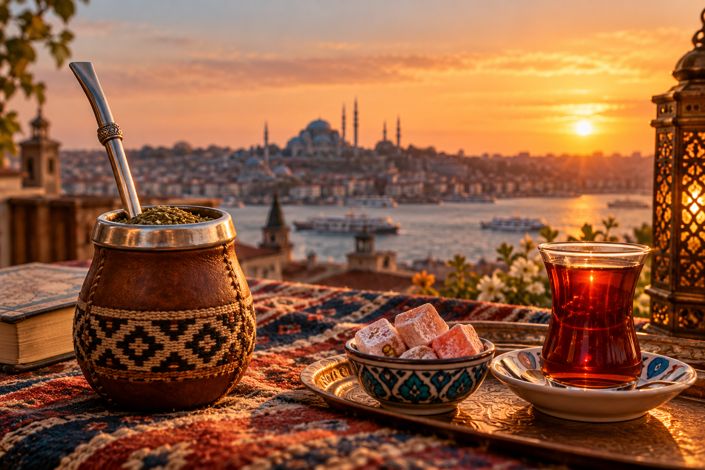

ESTAMBUL
Rincones e historias de la ciudad
Lugares, leyendas y curiosidades para mirar Estambul con otros ojos.
En preparaciónHistorias para mirar más de cerca
Tradiciones, palabras y relatos que nos ayudan a descubrir una cultura más allá de lo que vemos a primera vista.
ENTRAR AL CUADERNO
UN CUADERNO ENTRE DOS MUNDOS
Costumbres, lugares y encuentros que merecen ser contados.
EXPLORÁ LAS HISTORIASPARA LEER CON TIEMPO
Cultura, historia y vida cotidiana, explicadas de forma cercana y accesible.
CULTURA ARGENTINA
Descubrí qué representa el mate y cómo se comparte esta costumbre.
DESCUBRÍ LA HISTORIA
ESTAMBUL
Lugares, leyendas y curiosidades para mirar Estambul con otros ojos.
En preparación
ENTRE CULTURAS
Historias sobre identidad, encuentros y maneras distintas de vivir lo cotidiano.
En preparaciónSEGUIMOS EN CONTACTO
También podés seguir las historias y novedades en Instagram.
Seguí a Una Argenta en Estambul